Görme konuşmadan önce gelmiştir. Çocuk konuşmaya başlamadan önce bakıp tanımayı öğrenir.
Ne var ki başka bir anlamda da görme sözcüklerden önce gelmiştir. Bizi çevreleyen dünyada kendi yerimizi görerek buluruz. Bu dünyayı sözcüklerle anlatırız ama sözcükler dünyayla çevrelenmiş olmamızı hiçbir zaman değiştiremez. Her akşam güneşin batışını görürüz. Dünyanın güneşe arkasını dönmekte olduğunu biliriz. Ne var ki bu bilgi, bu açıklama gördüklerimize uymaz hiçbir zaman. Gerçeküstücü ressam Magritte Düşlerin Anahtarı adlı resminde sözcüklerle görülen nesneler arasında her zaman var olan bu uçurumu yorumlamıştır.
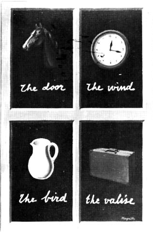
DÜŞLERİN ANAHTARI, MAGRİTTE 1898–1967
Düşündüklerimiz ya da inandıklarımız nesneleri görüşümüzü etkiler İnsanların Cehennem'in gerçekten var olduğuna inandıkları Ortaçağ’da ateşin bugünkünden çok değişik bir anlamı vardı kuşkusuz. Gene de onlardaki bu cehennem kavramı —yanıkların verdiği acıdan olduğu ölçüde— ateşi her şeyi yutan, kül eden birşey olarak görmelerinden doğmuştur.
Seven birisi için sevgiliyi görmenin hiçbir sözcük ya da kucaklayışla karşılaştırılamayacak bir bütünlüğü vardır; bu bütünlük, geçici olarak, ancak sevişmeyle sağlanabilir.
Gene de sözcüklerden önce gelen ve sözcüklerle tam olarak anlatılamayan görme, uyarıcılara karşı mekanik bir tepkide bulunup bulunmama sorunu değildir. (Görme eylemi, ancak gözün retinasını ilgilendiren sürecin küçük bir bölümünü alırsak böyle tanımlanabilir.) Yalnızca baktığımız şeyleri görürüz. Bakmak bir seçme edimidir. Bu edimin sonucu olarak gördüğümüz nesne —her zaman elimizle dokunabileceğimiz bir nesne anlamında olmasa da— ulaşabileceğimiz bir alana getirilmiş olur. İnsanın bir şeye dokunması demek, kendisini o şeyle ilişkili bir duruma sokması demektir. (Gözlerinizi kapayın, odada dolaşın, dokunma duygusunun durağan, sınırlı bir görme biçimine dönüştüğüne dikkat edin.) Tek bir nesneye değil, nesnelerle aramızdaki ilişkilere bakarız her zaman. Görüşümüz sürekli olarak canlıdır, hareketlidir; herşeyi çevresindeki bir çember içinde tutar; bulunduğumuz durumda bizim için orada var olabilecek herşeyi gösterir bize.
Birşeyi gördükten hemen sonra, aynı zamanda kendimizin görülebileceğini de farkederiz. Karşımızdakinin gözleri bizimkilerle birleşerek görünenler dünyasının bir parçası olduğumuza bütünüyle inandırır bizi.
Karşıdaki tepeyi gördüğümüzü kabul edersek o tepeden görüldüğümüzü de kabul etmemiz gerekir. Görüşün iki yanlılığı konuşmanın iki yanlılığından daha baskındır. Çoğu zaman karşılıklı konuşma bu görme-görülme işlemini dile getirme çabasıdır. ‘Sizin herşeyi nasıl gördüğünüz’ü benzetmeyle ya da doğrudan açıklama çabanızla, ‘onun her şeyi nasıl gördüğü’nü anlama çabanızdır.
İmge sözcüğüne bu kitapta verilen anlamıyla tüm imgeler insan yapısıdır.
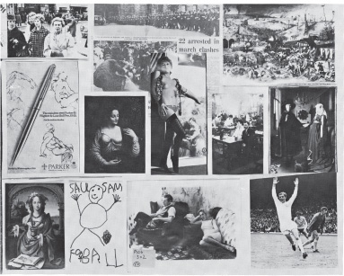
Bir imge, yeniden yaratılmış ya da yeniden üretilmiş görünümdür. İmge ilk kez ortaya çıktığı yerden ve zamandan —birkaç dakika ya da birkaç yüzyıl için— kopmuş ve saklanmış bir görünüm ya da görünümler düzenidir. Her imgede bir görme biçimi yatar. Fotoğraflarda bile. Çünkü fotoğraflar çoğu zaman sanıldığı gibi mekanik kayıtlar değildir. Her bir fotoğrafa baktığımızda, ne denli az olursa olsun, fotoğrafçının sınırsız görünüm olanakları arasından o görünümü seçtiğini farkederiz. Rastgele aile fotoğraflarında da böyledir bu. Fotoğrafçının görme biçimi konuyu seçişinde yansır. Ressamın görme biçimi, bez ya da kâğıt üstüne yaptığı imlerle yeniden canlandırılır. Her imgede bir görme biçimi yatsa da bir imgeyi algılayışımız ya da değerlendirişimiz aynı zamanda görme biçimimize de bağlıdır, (örneğin Sheila yirmi kişi arasında tek bir insandır; ama yalnız bizi ilgilendiren nedenlerle gözümüz ondan başkasını görmez.)
İmgeler başlangıçta orada bulunmayan şeyleri gözde canlandırmak amacıyla yapılmıştır. Zamanla imgenin canlandırdığı şeyden daha kalıcı olduğu anlaşıldı. Böyle olunca imge bir nesnenin ya da kişinin bir zamanlar nasıl göründüğünü —böylece konunun eskiden başkalarınca nasıl görüldüğünü de— anlatıyordu. Daha sonraları imgeyi yaratanın kendine özgü görüşü de, yaptığı kayıdın bir parçası olarak kabul edildi. İmge Y’nin X’i nasıl gördüğünü kaydeden bir şey oldu. Bu da, bireysellik bilincinin gittikçe artan bir tarih bilinciyle birlikte gelişmesi sonucunda olmuştur. Bu son gelişmeyi kesin bir tarihe bağlamaya çalışmak acelecilik olur. Bununla birlikte Avrupa’da bu bilincin Yeniden-Doğuş’un başlangıcından beri var olduğu kesindir.
Eskiden kalan kutsal kalıt ya da metinlerin hiçbiri o zamanlarda yaşayan insanların dünyasının, imgeler ölçüsünde doğrudan kanıtları değildir. Bu bakımdan imgeler, edebiyattan daha kesin, daha zengindir. Bu, sanatı yalnızca geleneksel bir kanıt gibi görerek onun anlatımcı ya da imgelemci niteliğini yadsımak anlamına gelmez. Yapıt ne denli imgelem yüklü olursa biz de sanatçının görünenleri algılayışına o denli derinden katılırız.
Şu da var ki imge sanat yapıtında verildiği zaman insanların ona bakışı sanat konusunda edindikleri varsayımlar dizisinin etkisinden kurtulamaz. Bu varsayımlar şunlarla ilgilidir:
Güzellik
Gerçek
Deha
Uygarlık
Biçim
Toplumsal konum
Beğeni vb.
Bu varsayımların çoğu bugünkü durumuyla artık dünyaya uymuyor. (Bugünkü durumuyla dünya salt nesnel bir gerçeklik değildir; buna bilinçlilik de katılmıştır.) Günümüze tam olarak uymamalarının dışında bu varsayımlar geçmişe de gölge düşürürler. Geçmiş hiçbir zaman olduğu yerde durup yeniden keşfedilmeyi, aynıyla, olduğu gibi tanınmayı beklemez. Tarih her zaman belli bir şimdi’yle onun geçmişi arasındaki ilişkiyi kurar. Demek ki şimdi’den korkmak eskiyi bulandırmaya yol açıyor. Geçmiş içinde yaşanacak birşey değildir. Eyleme geçerken içinden birşeyler çekip çıkarttığımız bir sonuçlar kuyusudur. Geçmişin ekinsel açıdan bulandırılması iki katlı bir kayıba yol açar. Önce sanat yapıtları gerektiğinden çok eskilere itilmiş olur. Sonra geçmişten bize eylem olarak tamamlanması gereken daha az sonuç kalmış olur.
Bir doğa resmi ‘gördüğümüzde’ kendimizi onun içine koyarız. Geçmişte yapılmış sanata ‘bakıyorsak’ o zaman kendimizi tarihin içine koymuş oluruz. Bu sanatı görmemiz engellendiğinde aslında bizim olan tarihten yoksun bırakılmış oluruz. Bu yoksunluktan kim yarar sağlar? Sonuçta geçmişin sanatı, mutlu azınlığın kendine bir tarih yaratmaya çabalamasından dolayı bulandırılmaktadır. Bu tarih, geriye bakıldığında yönetici sınıfların oynadığı tarihsel rolü haklı gösterebilir. Böyle bir haklı çıkarmanın çağdaş dilde hiç bir anlamı yoktur. Bundan ötürü ister istemez bulandırıcıdır.
Bu tür bulandırmaya iyi bir örnek düşünelim. Yakında Frans Hals üzerine iki ciltlik bir inceleme yayımlandı. Bu inceleme bir ressam üzerine bugüne dek yapılan çalışmaların en güvenilir olanıdır*. Uzmanlaşmış bir sanat tarihi incelemesi olaraksa bu kitabın öbür sıradan kitaplardan ayrılan bir yanı yoktur.
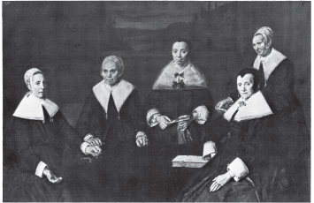
Frans Hals in yaptığı son iki büyük resim, on yedinci yüzyılda Hollanda’nın Haarlem kentindeki Yoksul Yaşlılar Bakımevi’nin Erkek Yöneticileri ve Kadın Yöneticileri’ni gösteren resimleridir. Bunlar ısmarlanmış seyirlik portrelerdir. O zamanlar artık seksenin üstünde yaşlı bir adam olan Hals, yoksuldur. Yaşamının büyük bir kesimi borç içinde geçmiştir. Bu resimleri yapmağa başladığı 1664 yılının kışında kendisine genel vakıftan iki yük tezek verilmiştir, yoksa soğuktan ölecektir. Hals’a modellik edenler işte böyle bir genel vakfın yöneticileridir.
Yazar bu gerçekleri sıralıyor; sonra bu resimlerde modellerin eleştirisini aramanın yanlış olacağını söylüyor. Hals’ın bu insanlara karşı kızgınlık duyduğunu gösteren hiçbir kanıt yoktur diyor. Bununla birlikte yazar bunları dikkate değer sanat yapıtları sayıyor ve bu gözleminin nedenini de açıklıyor. Kadın Yöneticiler için şunları söylüyor:
Kadınların her biri insanlık durumunu bize aynı önemle anlatıyor. Her biri zifiri karanlık yüzeyde aynı belirlilikle öne çıkıyor; gene de sıkı bir ritmik düzen içinde başlarıyla ellerinden oluşan belirsizleştirilmiş bir köşegenel sıralamayla birbirlerine bağlanmışlar. Koyu, ışıltılı siyahların ince değişimleri bütünün uyumlu bir biçimde kaynaşmasına yardım ediyor, güçlü beyazlar ve canlı ten renkleriyle unutulmaz bir karşıtlık yaratıyor; burada birbirinden kopmuş fırça vuruşları genişliğin ve güçlülüğün doruğuna ulaşmıştır. (Sözcüklerin altını biz çizdik.)
Resimde yapısal bütünlük, imgenin güçlü olmasını sağlar. Bir resmin kuruluşu üstünde düşünmek doğrudur aslında. Oysa burada kuruluştan, sanki kuruluşuyla resmin duygusal yükü özdeşleşmiş gibi söz ediliyor. Uyumlu bir kaynaşma, unutulmaz karşıtlık, genişliğin ve güçlülüğün doruğu gibi terimler imgenin uyandırdığı duyguları, yaşanmış yaşantılar düzeyinden soğuk ‘sanat değerlendirmesi’ düzeyine indirgiyor. Çatışma tümüyle ortadan kalkıyor. İnsan, değişmez ‘insanlık durumu’yla baş başa kalıyor; resim de harika yapılmış bir sanat nesnesi olup çıkıyor.
Aslında Hals ve ona bu görevi veren Yöneticiler hakkında çok az şey biliniyor. Aralarındaki ilişkinin ne olduğunu belirleyecek hiçbir belgesel kanıt yok. Ama resimlerin kendileri birer kanıt olarak görülebilir; başka bir insanın, ressamın, gördüğü bir küme erkekle kadının kanıtlığı. Şimdi bu kanıtı siz kendiniz inceleyin ve yargıyı kendiniz verin.
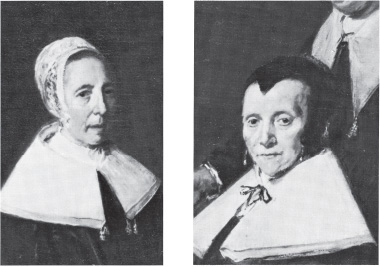
Sanat tarihçisi şu tür bir yargıdan korkar:
Hals’ın öbür resimlerinin çoğunda olduğu gibi kişisel özelliklerin çok iyi verilmesi, portresi yapılan erkek ve kadınların kişilik özelliklerini, giderek alışkanlıklarını bildiğimize nerdeyse inandırır bizi.
Nedir sözü edilen bu ‘inandırma’ olayı? Resimlerin üzerimizdeki etkisinden başka birşey değildir bu. Resimler bizi etkiler, çünkü Hals’ın modellerini görüşünü benimseriz. Bu benimseyiş saflıkla yapılan bir şey değildir. Bu resimleri insan, insan davranışları, yüzler ve kurumlar konusunda kendi gözlemlerimizle çakıştığı için kabul ederiz. Buysa bugün de benzer toplumsal ilişkilerin ve ahlaksal değerlerin geçerli olduğu bir toplumda yaşamamızdandır. Resimlere bugün ruhsal ve toplumsal geçerlilik kazandıran da budur. Portresi yapılan insanları tanıyabileceğimize bizi inandıran —ressamın kandırıcı ustalığı değil— bu özelliktir.
Yazar devam ediyor:
Bazı eleştirmenlere göre bu inandırma bütünüyle başarılı olmuştur. Örneğin düşük külahı uzun, düz saçlarını iyice kapamayan, garip yapılmış gözleri belli bir yere bakmayan Yönetici’nin sarhoş olarak gösterildiği söylenmiştir.
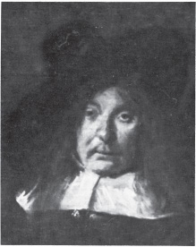
Yazara göre bu, resimde yalan söylemektir. Yazar o zamanlarda şapkanın böyle yana yatık olarak giyildiğini savunuyor. Yönetici’nin ifadesinin yüz felci sonunda böyle olduğunu kanıtlamak için tıbba başvuruyor. İçlerinden biri sarhoş gösterilmiş olsa resmin Yöneticilerce kabul edilmeyeceğini direnerek söylüyor. Bu görüşlerin herbiri sayfalarca tartışılabilir. (Onyedinci Yüzyıl Hollanda’sında erkekler serüvenci ve zevk düşkünü görünmek için şapkalarını yana yatık giyerlerdi. Çok içmek hoş görülen birşeydi vb.) Oysa böylesi savlar yazarın tartışmaktan kaçındığı tek önemli görüşten daha da uzaklaştırır bizi.
Bu önemli görüş şudur: Erkek ve Kadın Yöneticiler karşılarında duran Hals’a, ününü yitirmiş, vakıf yardımıyla yaşayan yoksul, yaşlı ressama bakmaktadırlar: Hals onları herşeye karşın nesnel olmaya (yani bir yoksulun bakışından kurtulmaya) çalışan yoksul bir adamın gözleriyle inceler. Resimlerdeki dram budur aslında. ‘Unutulmaz çelişki’nin dramı.
Bulandırmanın eleştiride kullanılan sözcüklerle hiçbir ilişkisi yoktur. Bulandırma, açıklanmasa kendiliğinden apaçık olacak şeyleri açıklamaya kalkışmaktır. Hals sermayeciliğin yarattığı yeni tipleri, yeni yüz ifadelerini resme geçiren ilk portreciydi. İki yüz yıl sonra Balzac’ın edebiyatta yaptığını resimde yaptı Hals. Gene de bu resimler üstüne yazılan o yetkili yapıtın yazarı sanatçının başarısını şöyle özetliyor:
Hals’ın öbür insanların bilincinde olmamızı zenginleştiren ve yaşamın canlı güçlerini bize yakından göstermesini sağlayan yüce itkilerin gittikçe artan gücünden duyduğumuz korkuyu büyüten kişisel görüşüne olan şaşmaz bağlılığı.
Asıl budur, bulandırma.
Geçmişi bulandırmaktan kaçınmak için (geçmiş aynı ölçüde, sahte Marksçı bulandırmaya da uğrayabilir) öncelikle, şimdi’yle geçmiş arasındaki özel ilişkiyi resimsel imgelere bakarak inceleyelim. Şimdi’yi gereken açıklıkla görebilirsek geçmiş üzerine sorulması gereken soruları da sorabiliriz.
Bugün biz geçmişin sanatını hiç kimsenin görmediği bir biçimde görüyoruz. Aslında bambaşka bir biçimde algılıyoruz.
Bu değişiklik; perspektif geleneği denen şeyin aracılığıyla gösterilebilir. Yalnız Avrupa sanatına özgü olan Yenidendoğuş’un başlarında yerleşen perspektif geleneğinde her şey bakan kişinin görüş açısına göre düzenlenir. Bu, tıpkı deniz fenerinden çıkan ışınlara benzer; ama dışarı doğru çıkan ışınlar yerine burada görünen şeyler sanki içeri doğru ilerler. Geleneklere uyularak bu görünüşlere gerçek denmiştir. Perspektif bir tek gözü, görünen nesneler dünyasının merkezi yapar. Her şey sonsuzluktaki kayma noktası gibi gözün üstünde toplanır. Görünenler dünyası seyirciye göre bir zamanlar evrenin Tanrı ya göre düzenlendiği biçimde düzenlenmiştir.
Perspektif geleneğine göre görsel karşılıklılık diye birşey yoktur. Tanrı nın, başkalarıyla olan ilişkilerine göre durumunu ayarlaması gerekmez; Tanrı’nın kendisi durumdur. Perspektifin içinde yatan çelişki perspektifin tüm gerçeklik imgelerini bir tek seyircinin göreceği biçimde dizmesidir. Bu seyirci, Tanrı’nın tersine, bir anda ancak bir tek yerde bulunabilir.
Fotoğraf makinasının bulunmasından sonra bu çelişki daha da belirginleşmiştir.
ELİNDE SİNEMA MAKİNASI OLAN ADAM'DAN DURUK BİR FOTOĞRAF, VERTOV
Bir gözüm ben. Mekanik bir göz. Ben, makina, size ancak benim görebileceğim bir dünyayı açıyorum. Kendimi bugün de, bundan sonra da insana özgü o hareketsizlikten kurtarıyorum. Hiç durmadan hareket ediyorum. Nesnelere yaklaşıp onlardan uzaklaşıyorum. Süzülüp altına giriyorum onların. Koşan bir atın ağzı boyunca koşuyorum. Düşen, yükselen nesnelerle birlikte düşüp kalkıyorum ben de. Karmakarışık hareketler, en karmaşık bireşimler içinde hareketleri sırayla kaydederek dönen benim: Makina.
Zaman ve yer sınırlamalarından kurtulmuşum; evrenin her bir noktasını, bütün noktalarını, nerede olmalarını istiyorsam ona göre düzenliyorum. Benim yolum, dünyanın yepyeni bir biçimde algılanmasına giden yoldur. Böylece size bilinmeyen bir dünyayı açıyorum*.
Fotoğraf makinesiyla anlık görünümler birbirinden ayrıldı; böylece imgelerin zamana bağlı olmadıkları fikri ortadan kalktı. Başka bir deyişle makina geçen zaman kavramının (yağlıboya resim dışında) görünen şeylerin algılanışından ayrılamayacağını gösterdi. Görüşümüz neyi nerede gördüğümüze bağlıydı. Gördüğümüz şey de zaman ve yer içinde bulunduğumuz duruma bağlıydı. Her şeyin kayma noktası olarak kabul edilen insan gözü üzerinde toplandığını düşünmek olanaksızdı artık.
Elbette insanlar fotoğraf makinasının bulunmasından önce herkesin her şeyi görebildiğine inanmıyorlardı. Oysa perspektifle görsel alan sanki ideal olan buymuş gibi düzenleniyordu. Perspektifle yapılmış her taslak ya da yağlıboya resim seyirciye dünyanın biricik merkezinin kendisi olduğunu söylüyordu. Fotoğraf makinası —ondan daha çok da sinema makinası— aslında böyle bir merkezin bulunmadığını gösterdi.
Fotoğraf makinasının bulunması insanın görüşünü değiştirdi. Görünen nesneler başka bir anlama gelmeğe başladı. Bunlar hemen resimlerde yansıtıldı.
İzlenimciler’e göre görünen nesneler kendilerini bize görülmek için sunmuyorlardı artık. Tersine, görünenler birbirleriyle sürekli alışveriş içinde bulunduklarından yakalanması güç, hareketli şeylerdi. Kübistlere göre görünenler tek bir gözün karşısına çıkan şeyler değildi artık; verilen bir nesnenin (ya da insanın) çevresindeki tüm noktalardan alınabilecek görünümlerin toplamıydı.
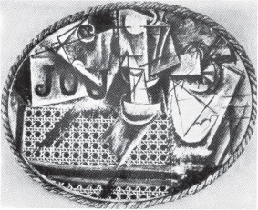
HASIR İSKEMLELİ ÖLÜ DOĞA, PICASSO 1881–
Fotoğraf makinasının bulunuşu bu makinanın bulunuşundan çok önce yapılan resimlere bakışı da değiştirdi. Başlangıçta resimler süslemek üzere yapıldıkları yapının bütünleyici birer parçasıydı. Erken Yenidendoğuş katedral ya da kiliselerinde insan, duvarlardaki imgelerin yapının iç yaşamının birer kaydı olduğu, imgelerin birleşerek yapının belleğini oluşturduğu duygusuna kapılır —imgeler yapının kendine özgü niteliğini böylesine tamamlar.
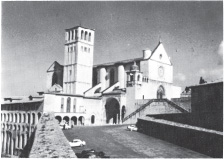
ASSISI'DE AZİZ FRANCIS KİLİSESİ
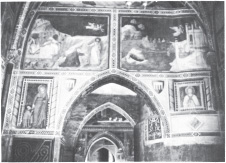
Her resimin biricikliği bir zamanlar bulunduğu yerin biricik olmasından kaynaklanıyordu. Resim bir yerden başka bir yere taşınabilirdi. Ama hiçbir zaman aynı anda iki yerde birden görülemezdi. Fotoğraf makinası, resmin fotoğrafını çekerek resmin imgesinin taşıdığı biricikliği ortadan kaldırmış oldu. Bunun sonucunda resmin anlamı değişti. Daha kesin söylersek resmin anlamı çoğaldı, birçok anlama bölündü.
Herhangi bir resim televizyon camında göründüğünde olanlar buna çok canlı bir örnektir. Resim her seyircinin evine girer. Seyircinin evindeki duvar kâğıtları, mobilya ve hatıra eşyalarıyla çevrelenir. O ailenin havasına girer. Konuşmalarına konu olur. Kendi anlamını onların anlamına katar. Bu resim aynı anda başka milyonlarca eve de girer, bunların her birinde değişik bir bağlam içinde görülür. Fotoğraf makinesi aracılığıyla artık resim, seyirciye gitmektedir, seyirci resme değil. Böylelikle resmin anlamı çoğalmaktadır.
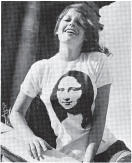
Elbette buna tüm yeniden canlandırmaların az çok çarpıtılmış olduğu, bu yüzden ilk resmin gene de bir bakıma biricik olduğu söylenerek karşı çıkılabilir. Burada Leonardo da Vinci’nin Kayaların Bakiresi adlı yapıtının yeniden canlandırmasını görüyorsunuz.
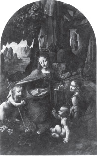
KAYALARIN BAKİRESİ, LEONARDO DA VINCI 1452–1519
Bu yeniden canlandırmayı gördükten sonra insan National Gallery’ye gidip resmin aslına bakarak yeniden canlandırmada neyin eksik olduğunu anlayabilir. Bu yaklaşımı tersine çevirerek insan, yeniden canlandırmanın nasıl birşey olduğunu unutabilir; aslını gördüğünde bunun, daha önce başka bir yerde yeniden canlandırmasını gördüğü ünlü bir resim olduğunu da düşünebilir. Ne olursa olsun her iki durumda da asıl resmin biricikliği, şimdi yeniden canlandırmanın aslı olmasından kaynaklanmaktadır. Burada insana biricik olarak çarpıcı gelen resimdeki imgenin gösterdikleri değildir artık; resmin anlamı söylediklerinde değil, ne olduğundadır.
Özgün yapıtın kazandığı bu yeni durum, yeniden canlandırma araçlarının doğurduğu anlaşılabilir bir sonuçtur. Ama işte tam bu noktada bulandırma süreci gene işe karışır. Özgün yapıtın değeri onun biricik olarak söylediklerinde değil, biricik oluşundadır artık. Yapıtın bu biricik olan varlığı, içinde bulunduğumuz ekinde nasıl değerlendirilmekte, nasıl tanımlanmaktadır? Yapıt, değeri az bulunurluğuna bağlı bir nesne olarak tanımlanmaktadır. Bu değer pazarda biçilen fiyata göre kararlaştırılır ve onunla ölçülür. Oysa resim ‘bir sanat yapıtı’ olduğundan —sanatın da ticaretten daha üstün olduğuna inanıldığından— yapıtın pazardaki fiyatının onun manevi değerlerinin bir yansıması olduğu sanılır. Şu var ki bir nesnenin manevi değeri, bir haberin ya da örneğin tersine, ancak büyü ya da din açısından açıklanabilir. Modern toplumda büyü de, din de canlı birer güç olarak varolmadıklarına göre, sanat nesnesi, ‘sanat yapıtı’ bütünüyle yapay bir dinsellik havasına sarılmış demektir. Sanat yapıtları kutsal kalıtlarmış gibi tartışılıp öyle sunulur bizlere. Herşeyden çok kendilerini saran kabuğun kanıtı olan kalıtlardır bunlar. Ortaya çıktıkları geçmiş zaman dilimi, onların gerçekten canlı kaldıklarını kanıtlamak amacıyla incelenir. Kalıtım çizgileri belirginleşince de bunların sanat yapıtı olduğu söylenir.
National Gallery’ye giden birisi Kayaların Bakiresi’nin önünde dururken, resim hakkında duyduğu, okuduğu şeylerin hemen hepsinin etkisi altında şöyle birşey duyabilir: “İşte önündeyim. O tabloyu görüyorum. Leonardo da Vinci’nin bu tablosunun bir eşi daha yok dünyada. Aslı National Gallery’de. Bu resme iyice bakarsam onun gerçekliğini duyabilirim. Leonardo da Vinci’nin Kayaların Bakiresi’; gerçek, bu yüzden de güzel.”
Bu gibi duyguları naif diyerek bir yana atıvermek çok yanlış olur. Bu duygular sanat uzmanlarının incelmiş ekin anlayışıyla tam bir uyum içindedir; National Gallery’deki katalog da onlar için hazırlanmıştır. Bu katalogdaki uzun açıklamalardan biri Kayaların Bakiresi üzerine yazılmış olanıdır. Bu yazı, sımsıkı yazılmış on dört sayfadan oluşur. Yazıda imgenin anlamından hiç söz edilmez. Resmi kimin ısmarladığından, yasal hak kavgalarından, amaçdan, resmin kime ait olduğundan, yapılmış olabileceği tarihten, resmi satın alan ailelerden söz edilir. Bu bilgilerin ardında yıllar süren bir araştırma yatar. Bu araştırmalardan amaç resmin, tüm kuşkuların ötesinde, Leonardo’nun olduğunu kanıtlamaktır. İkinci amaç da bu resmin hemen hemen aynısı olan ve Louvre’da bulunan tablonun National Gallery’dekinin kopyası olduğunu kanıtlamaktır.
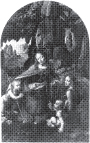
NATIONAL GALLERY
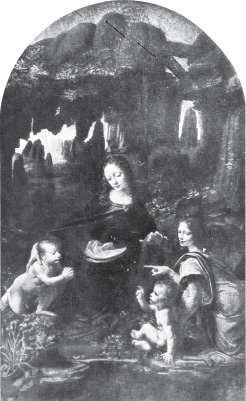
KAYALARIN BAKİRESİ, LEONARDO DA VINCI 1452–1519
Fransız sanat tarihçileriyse bunun tam tersini kanıtlamaya çalışıyorlar.
AZİZE ANNE VE VAFTİZCİ JOHN'LA BİRLİKTE BAKİRE VE ÇOCUK, LEONARDO DA VINCI 1452–1519
National Gallery’de Leonardo’nun Azize Anne ve Vaftizci Aziz John’la Birlikte Bakire ve Çocuk taslağının kopyaları müzedeki bütün resim kopyalarından daha çok satılmaktadır. Oysa bir kaç yıl önce bu resmi yalnızca uzmanlar tanıyordu. Resmin böyle birdenbire tanınması bir Amerikalının onu iki buçuk milyon İngiliz lirasına almak istemesinden sonra oldu.
Şimdi resim bir odada tek başına asılı duruyor. Oda bir kilise gibi; resmin önünde kurşun geçmez plastik cam var. Resim burada yepyeni bir etkililik kazanmış. Gösterdikleri —imgenin taşıdığı anlam— yüzünden değil bu. Resmin böyle etkileyici, gizemli oluşu, satış değerinden kaynaklanıyor.
Öyleyse, özgün sanat yapıtlarını çevreleyen, aslında onların satış değerlerine bağlı olan bu yalancı dinsellik havası, fotoğraf makinasının resimleri yeniden canlandırılabilir kılmasından sonra resimlerin yitirdiği şeyin yerini almıştır. Bu dinsellik havasının işlevi, özlem uyandırmaktır. Oligarşik, demokrasi dışı bir ekinin süregitmekte olan değerlerinin son boş direnişidir bu. İmge artık biricik, eşsiz olmasa bile sanat nesnesi o şey, gizemlilik katılarak biricik ve eşsiz kılınmalıdır.
Nüfusun büyük bir çoğunluğu sanat müzelerine gitmez. Aşağıdaki tabloda sanata duyulan ilgiyle mutlu azınlığın gördüğü eğitim arasındaki yalın bağıntı görülüyor.
Müzeleri gezenlerin eğitim düzeylerine göre değişik uluslardaki oranı: Müzeleri gezenlerin her eğitim kesimine göre yüzdelenişi:
|
Yunanistan |
Polonya |
Fransa |
Hollanda |
|
|
Hiçbir eğitim belgesi olmayanlar |
0.02 |
0.12 |
0.15 |
– |
|
Yalnız ilkokul eğitimi olanlar |
0.30 |
1.50 |
0.45 |
0.50 |
|
Yalnız lise eğitimi olanlar |
10.5 |
10.4 |
10 |
20 |
|
Daha yüksek ve yüksek öğrenim |
11.5 |
11.7 |
12.5 |
17.3 |
|
Kaynak: Pierre Bourdien ve Alain Darbel, L’Amour de I’Art, Editions de Minuit, Paris 1969, Ek 5, tablo 4. |
||||
Halkın çoğunluğu müzelerin, kendilerinin dışında kaldığı bu gizemliliği gösteren kutsal kalıntılarla dolu olduğunu kabul etmişlerdir: Paha biçilemez bir zenginliğin gizemi. Başka türlü söylersek, bu insanlar özgün sanat başyapıtlarının (hem para hem de manevi değerler açısından) varlıklılara ait olduğuna inanırlar. Başka bir tabloda da toplumsal sınıfların sanat galerilerini nasıl gördüğüne bakalım:
|
Aşağıda yazılı yerlerden size müzeyi en çok hatırlatan hangisidir? |
|||
|
Kol işçileri |
Usta işçiler ve memurlar |
Meslek Sahipleri üst kesim yöneticiler |
|
|
% |
% |
% |
|
|
Kilise |
66 |
45 |
30.5 |
|
Kitaplık |
9 |
34 |
28 |
|
Konferans salonu |
– |
4 |
4.5 |
|
Büyük mağaza ya da büyük kamu yapılarının girişi |
|||
|
– |
7 |
2 |
|
|
Kilise ve kitaplık |
9 |
2 |
4.5 |
|
Kilise ve konferans salonu |
4 |
2 |
– |
|
Kitaplık ve konferans salonu |
– |
– |
2 |
|
Hiçbiri |
4 |
2 |
19.5 |
|
Cevap vermeyenler |
8 |
4 |
9 |
|
100 (n = 53) |
100 (n = 98 |
100 (n = 99 |
|
|
Kaynak: Yukarıdaki kitap, ek 4 ve tablo 8 |
|||
Bu resimsel canlandırma çağında resimlerin anlamları artık onlardan ayrılamaz birşey değildir; bir yerden bir yere aktarılabilir bu anlamlar: Başka deyişle bir tür bilgi olmuştur, bütün bilgiler gibi ya kullanılır ya da bir yana atılır. Bilgi, kendi içinde özel bir yetke taşımaz. Bir resim kullanıldığı zaman anlamı ya kayar ya da bütünüyle değişir. Bunun nelere yol açabileceğini açıkça kavramak gerekir. Yeniden yaratmanın imgenin belli yanlarını aynıyla yansıtmaması demek değildir bu; yeniden canlandırmanın, imgenin çok değişik amaç için kullanılmasını, yeniden canlandırılan imgenin, özgün yapıtın tersine, bütün bu amaçların hepsine uyabilmesini sağlamak ya da bunu kaçınılmaz kılmak demektir. Yeniden canlandırılan imgenin bu yolla bulandırılışını gösteren bir kaç örnek inceleyelim.
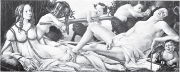
VENUS VE MARS, BOTTICELLI 1445–1510
Yeniden canlandırma yoluyla bir resmin bir ayrıntısı bütününden ayrılabilir. Ayrıntı değişime uğrar. Alegorik bir insan imgesi, bir kız portresine dönüşebilir.
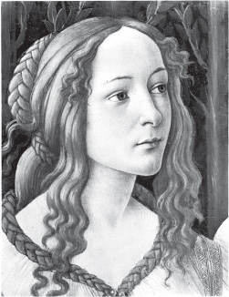
Bir resim, film makinasıyla yeniden canlandırıldığında ister istemez film yapımcısının savını doğrulayan bir malzeme olup çıkar.
Bir resmin çeşitli imgelerini yeniden canlandıran bir film, seyirciyi resmin içinden geçirerek film yapımcısının istediği sonuçlara götürür.
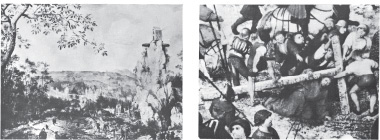
Resim, film yapımcısının buyruğuna girmiştir. Çünkü film zaman içinde yayılır, oysa resim yayılmaz.
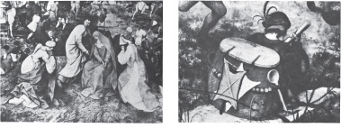
Filmde bir imgenin öbürünü izleyişi, imgelerin ardarda sıralanışı, tersine çevrilemeyecek bir deyiş biçimi kurar.
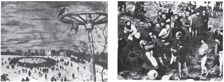
Resimde, tüm öğeler aynı anda birarada görülebilecek biçimde karşımızdadır. Seyirci resmin her öğesini ayrı ayrı incelemek için resme bir süre bakmak isteyebilir; oysa her sonuca varışımızda, resmin bütünü, bu sonucu doğrulamak ya da çürütmek amacıyla yeniden başvurulmak üzere karşımızdadır. Resim, bir bütün olarak tüm yetkesiyle her zaman karşımızdadır.
CALVARY'YE DOĞRU İLERLEYİŞ, BREUGHEL 1525–1569
Yeniden canlandırılan resimlerin çevresinde çoğu zaman yazılar bulunur.
Bu, üzerinde kuşlar uçuşan bir mısır tarlasının resmidir. Resme bir süre bakın. Sonra sayfayı çevirin.
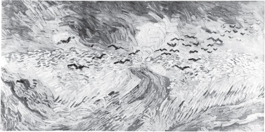
EKİN TARLASI VE KARGALAR, VAN GOGH 1853–1890
EKİN TARLASI VE KARGALAR, VAN GOGH 1853–1890
Bu Van Gogh'un kendini öldürmeden önce yaptığı son resimdir.
Eklenen sözün imgeyi nasıl değiştirdiğini açıklayabilmek güç, ama değiştirdiği kuşkusuz. Artık imge, sözü aydınlatıyor.
Bu yazıda, yeniden canlandırılan her imge resmin ilk bağımsız anlamıyla çok az ilgisi olan ya da hiç ilgisi olmayan savın birer parçası olmuştur. Resimler söylenenleri, sözsel yetkeleri doğrulamak için alıntı olarak kullanılıyor. (Bu kitapta bulunan yazısız denemeler bu ayrımı daha açık bir biçimde gösterecektir.)
Yeniden canlandırılan resimler de, bütün bilgiler gibi, hiç durmadan taşınıp duran bütün öbür bilgiler karşısında kendi yerlerini korumak zorundadırlar.
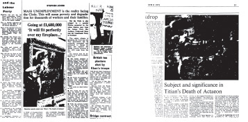
Sonuç olarak yeniden canlandırma, resmin aslındaki imgeyi göstermenin yanısıra başka imgelerin gösterdiği bir şey de olur. Bir imgenin anlamı onun hemen yanında görülen ya da hemen arkasından gelen şeye göre değişir. O imgenin taşıdığı yetke, içinde göründüğü tüm bağlama yayılır.
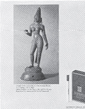
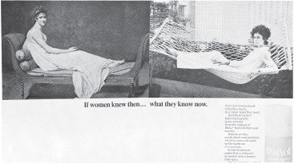
Sanat yapıtları yeniden canlandırılabilmelerinden dolayı, kuramsal olarak, herkesçe kullanılabilirler. Gene de çoğu zaman —sanat kitaplarında, dergilerde, filmlerde ya da oturma odalarında yaldızlı çerçevelerin içinde bulunan— yeniden canlandırmalar, hiçbir şeyin değişmediğini, sanatın o biricik, eksilmeyen üstünlüğüyle başka birçok yetkeyi doğruladığını, sanatın eşitsizlikleri soylu, sınıfsal sıradüzenleri de başdöndürücü gösterdiği yanılsamasını güçlendirmek için kullanılıyor. Örneğin Ulusal Ekin Kalıtı kavramı, sanatın yetkesini, geçmişteki toplumsal düzeni, onun üstünlük tanıdığı kişileri yüceltmek için kötüye kullanıyor.
Yeniden canlandırma araçları, siyasal ve tecimsel açıdan olası kıldıkları şeyleri saklamak ya da yadsımak amacıyla kullanılır. Oysa bazan bireyler bunları bambaşka bir biçimde kullanabilirler.
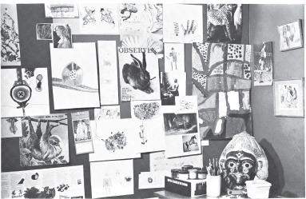
Büyüklerle çocuklar yatak ya da oturma odalarındaki duvarlara bazan karton üstünde birşeyler asarlar: Mektuplar, fotoğraflar, resimlerin yeniden canlandırmaları, gazete parçaları, özgün çizimler, posta kartları. Bu duvarlardaki imgeler hep aynı dili konuşurlar; bu dilin içinde az çok eşit bir yer tutarlar; çünkü orada oturan kişinin yaşantılarına uymak, bunları anlatmak için çok kişisel bir biçimde seçilmişlerdir. Mantıksal olarak müzelerin yerinde bu resimli duvarların bulunması gerekirdi.
Bununla ne demek istiyoruz? Önce demek istemediklerimizi saptayalım.
Özgün sanat yapıtlarının karşısında, eskiden kalmalarının yarattığı şaşkınlık dışında duyacağımız hiçbir şey kalmadığını söylemek istemiyoruz elbette. Özgün sanat yapıtlarına yaklaşmak için çoğunlukla kullanılan yollar —müze katalogları, rehberler, kiralık kasetler vb.— onlara tek yaklaşma yolu değildir. Geçmişin sanatına özlemle bakmaktan kurtulursak, yapıtlar birer dinsel kalıt olmaktan çıkacaklardır ama yeniden canlandırma çağından önce oldukları duruma hiçbir zaman dönemeyeceklerdir. Özgün sanat yapıtlarının bugün işe yaramaz olduklarını söylemek istemiyoruz.
SÜT BOŞALTAN KADIN, VERMEER 1632–1675
Özgün resimler, bir bakıma bilginin hiçbir zaman olamayacağı ölçüde sessiz ve dingindirler. Bu bakımdan duvara asılan bir yeniden canlandırma, özgün resimle karşılaştırılamaz. Çünkü özgün resimde sessizlik ve dinginlik asıl malzemenin, boyanın içine sinmiştir; insan boyada ressamın o andaki (resmi yaparkenki) hareketlerinin izlerini görebilir. Bunun, resmin boyanmasıyla insanın ona bakması arasındaki zaman aralığını kapatmak gibi bir etkisi vardır. Bu özel anlamda tüm resimler çağdaştır. Resimlerin çağlarının tanıkları olma özelliği buradan gelir. İçinde yaşadıkları tarihsel an orada, gözümüzün önündedir. Cezanne, buna benzer birşeyi ressamın açısından söylemiştir: “Dünyanın yaşamından bir an geçer! O anı gerçekliğiyle yakalayıp resme geçirmek, bunu yaparken herşeyi unutmak! O anı yaşamak, duyarlı bir levha olmak... zamanımızdan önce olan herşeyi unutarak gördüklerimizin imgesini yansıtmak...” Resme geçirilen bu an’ı, gözlerimizin önüne serildiğinde nasıl anlamlandırdığımız, sanattan ne beklediğimize göre değişir; bu da yeniden canlandırmalar yoluyla bu güne dek resimlerin anlamlarını nasıl algılayageldiğimize bağlıdır.
Tüm sanatların öylece, kendiliğinden anlaşılabileceklerini de söylemek istemiyoruz. Eski bir Yunan başını bir dergiden bazı kişisel yaşantıları anımsattığı için kesip öteki dağınık imgelerle birlikte duvara asmak, o başın tüm anlamıyla kavranması demek değildir elbette.
Saflık iki yanlıdır. İnsan bir tertibe katılmayı yadsıyarak o tertibin getireceği suçluluktan kurtulur, saf ve temiz kalabilir. Saf kalmak, aynı zamanda bilgisiz kalmak anlamına da gelebilir. Buradaki çekişme saflıkla bilgi (ya da doğalla ekinsel) arasındaki çekişme değildir. Sanatı yaşantıların her yönüyle bağdaştırmaya çalışan kapsayıcı yaklaşımla, çökmekte olan bir yönetici sınıfın özlemini gidermekle görevli olan birkaç uzmanın ayrım gözetici sanat yaklaşımı arasındaki çekişmedir. (Bu sınıf, işçi sınıfı önünde değil, toplumsal kurumlarla devletin yenilerde ortaya çıkan yetkesi karşısında çökmektedir.) Gerçek sorun şudur: Geçmişteki sanat kimindir gerçekten? Bu sanatı kendi yaşamlarına uygulayabilenlerin mi, yoksa kalıntı uzmanlarından oluşan bir ekinsel sınıfa mı?
Görsel sanatlar her zaman belli bir koruyucu kabuk içinde varolagelmişlerdir; başlangıçta bu kabuk gizemli ya da kutsal birşeydi. Bu kabuğun bir de maddesel yanı vardı: Bu, yapıtın içine oturtulması ya da içinde saklanması için yapılan yer, mağara, binaydı. Başta yaşantısı olan sanat yaşantısı, yaşamın geri kalan şeylerinden ayrıldı —bu da sanatı amaca göre kullanabilmek için yapıldı. Sonra sanatın sarıldığı koruyucu kabuk toplumsal birşey oldu. Yönetici sınıfların ekinine girdi. Bu arada bu sınıfın yaşadığı saray ve evlerin içinde insanlardan ayrıldı, koparıldı. Bütün bunlar sırasında sanatın yetkesi, koruyucu kabuğun taşıdığı özel yetkeden ayrılamaz oldu.
Çağdaş yeniden canlandırma araçlarının yaptığı, sanatın yetkesini yıkmak ve onu —ya da bu araçların yeniden canlandırdığı imgeleri— koruyucu kabuklardan kurtarmaktı. Tarihte ilk kez sanat imgeleri gelip geçici, her yere taşınabilen, değeri maddesine bağlı olmayan, kolayca bulunabilen, değersiz, bedava şeyler oldular. Dilin bizi sarıp sarmaladığı gibi sardılar çevremizi. Yaşamın genel akışına karıştılar; bu akış üzerinde kendi başlarına hiçbir etkileyici güçleri kalmadı artık.
Gene de bütün bu olanların çok az kişi farkındadır bugün. Çünkü yeniden canlandırma yolları, hemen hemen her zaman hiçbir şeyin değişmediği yanılsamasını güçlendirmek için kullanılmıştır. Ne var ki büyük kitleler yeniden canlandırmalar yoluyla, bir zamanlar yalnızca kültürlü azınlığın yaptığı gibi; sanatın tadına varmaya başladı. Halk kitleleri bugün bu sanat karşısında ilgisiz ve kuşkuludur; bu da anlaşılabilir bir şeydir.
İmgelerin yeni dili değişik bir biçimde kullanılsaydı, bu kullanım yoluyla yeni bir tür güç kazanacaktı. Bu imgeler dili içinde, yaşantılarımızı sözcüklerin yetersiz kaldığı yerlere göre daha iyi bütünleyebilecektik. (Görme, sözcüklerden önce gelir). Yalnızca kişisel yaşantılarımızı değil, geçmişle olan ilişkilerimizin temel tarihsel yaşantılarını, başka deyişle, yaşamlarımıza anlam katma arayışını, canlı öğeleri olabileceğimiz bir tarihin anlaşılması yaşantısını da bütünleyebilecektik o zaman.
Geçmişin sanatı, eskiden olduğu gibi değildir artık bugün. Yetkesini yitirmiştir. Onun yerine bir imgeler dili oluşmuştur. Şimdi önemli olan bu dili kimin, ne amaçla kullandığıdır. Bu da yeniden canlandırmaların yayın hakkı, sanat basımevleriyle yayınevlerinin kimin elinde olduğu, sanat galerilerinin, müzelerin genel tutumu sorununa gelip dayanır. Çoğu zaman dendiği gibi bunlar sanatı ilgilendiren, sınırlı sorunlar değildir. Bu denemenin amaçlarından biri de gerçekten tehlikede olan şeyin çok daha büyük olduğunu göstermektir. Kendi geçmişinden kopmuş bir halk ya da sınıf, seçmede ve eyleme geçmede tarih içinde kendi yerini bulmuş bir sınıf ya da halktan çok daha az özgürdür, işte bunun için —tek neden de budur zaten— geçmişin tüm sanatı bugün siyasal bir sorun olarak karşımızdadır.
Bu denemedeki fikirlerin çoğu bundan kırk yıl kadar önce yazan bir Alman eleştirmeni ve düşünürü olan Walter Benjamin’den alınmıştır.
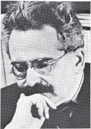
Benjamin’in denemesi Mekanik Yeniden Yaratma Çağında Sanat Yapıtı adını taşıyordu. Bu deneme Illuminations başlıklı kitapta İngilizce olarak bulunabilir. (Cape, Londra 1970).